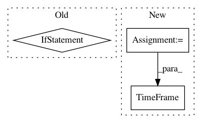

2a8e39cdf3c36048bd5279c554d4f8fd521891c6,nilmtk/stats/goodsectionsresults.py,GoodSectionsResults,import_from_cache,#GoodSectionsResults#,109
Before Change
timeframe = TimeFrame(name, group["end"].iloc[0])
if timeframe in sections:
timeframes = [TimeFrame(row["section_start"], row["section_end"])
for _, row in group.iterrows()]
self.append(timeframe, {"sections": [timeframes]})
def export_to_cache(self):
After Change
if timeframe in sections:
timeframes = []
for _, row in group.iterrows():
section_start = tz_localize_naive(row["section_start"], tz)
section_end = tz_localize_naive(row["section_end"], tz)
timeframes.append(TimeFrame(section_start, section_end))
self.append(timeframe, {"sections": [timeframes]})
def export_to_cache(self):
In pattern: SUPERPATTERN
Frequency: 3
Non-data size: 3
Instances
Project Name: nilmtk/nilmtk
Commit Name: 2a8e39cdf3c36048bd5279c554d4f8fd521891c6
Time: 2014-11-26
Author: jack-list@xlk.org.uk
File Name: nilmtk/stats/goodsectionsresults.py
Class Name: GoodSectionsResults
Method Name: import_from_cache
Project Name: nilmtk/nilmtk
Commit Name: 5536ef3420eb68843d887b064a0e45f15d30078c
Time: 2014-07-25
Author: jack-list@xlk.org.uk
File Name: nilmtk/datastore.py
Class Name: HDFDataStore
Method Name: load
Project Name: nilmtk/nilmtk
Commit Name: 343aeb546ecaf543788a7716166a5b991555f693
Time: 2014-12-01
Author: jack-list@xlk.org.uk
File Name: nilmtk/results.py
Class Name: Results
Method Name: timeframes